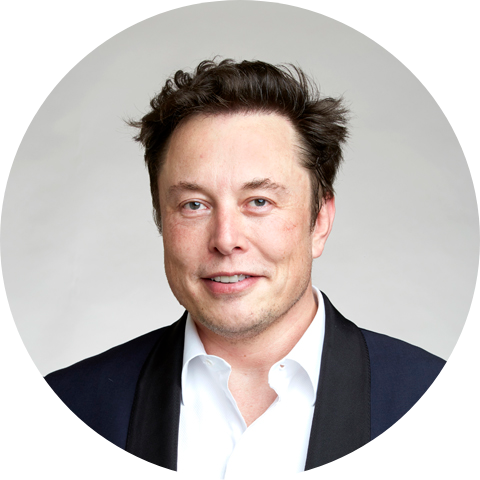

|  |
Elon MuskSouth African entrepreneur Elon Musk is known for founding Tesla Motors and SpaceX, which launched a landmark commercial spacecraft in 2012. |
Elon Musk is a South African-born American entrepreneur and businessman who founded X.com in 1999 (which later became PayPal), SpaceX in 2002 and Tesla Motors in 2003. Musk became a multimillionaire in his late 20s when he sold his start-up company, Zip2, to a division of Compaq Computers.
Musk made headlines in May 2012, when SpaceX launched a rocket that would send the first commercial vehicle to the International Space Station. He bolstered his portfolio with the purchase of SolarCity in 2016 and cemented his standing as a leader of industry by taking on an advisory role in the early days of President Donald Trump's administration.
In January 2021, Musk reportedly surpassed Jeff Bezos as the wealthiest man in the world.
Musk was born on June 28, 1971, in Pretoria, South Africa. As a child, Musk was so lost in his daydreams about inventions that his parents and doctors ordered a test to check his hearing.
At about the time of his parents’ divorce, when he was 10, Musk developed an interest in computers. He taught himself how to program, and when he was 12 he sold his first software: a game he created called Blastar.
In grade school, Musk was short, introverted and bookish. He was bullied until he was 15 and went through a growth spurt and learned how to defend himself with karate and wrestling.
Musk’s mother, Maye Musk, is a Canadian model and the oldest woman to star in a Covergirl campaign. When Musk was growing up, she worked five jobs at one point to support her family. Musk’s father, Errol Musk, is a wealthy South African engineer. Musk spent his early childhood with his brother Kimbal and sister Tosca in South Africa. His parents divorced when he was 10.
At age 17, in 1989, Musk moved to Canada to attend Queen’s University and avoid mandatory service in the South African military. Musk obtained his Canadian citizenship that year, in part because he felt it would be easier to obtain American citizenship via that path.
In 1992, Musk left Canada to study business and physics at the University of Pennsylvania. He graduated with an undergraduate degree in economics and stayed for a second bachelor’s degree in physics.
After leaving Penn, Musk headed to Stanford University in California to pursue a PhD in energy physics. However, his move was timed perfectly with the Internet boom, and he dropped out of Stanford after just two days to become a part of it, launching his first company, Zip2 Corporation in 1995. Musk became a U.S. citizen in 2002.
Musk launched his first company, Zip2 Corporation, in 1995 with his brother, Kimbal Musk. An online city guide, Zip2 was soon providing content for the new websites of both The New York Times and the Chicago Tribune. In 1999, a division of Compaq Computer Corporation bought Zip2 for $307 million in cash and $34 million in stock options.
In 1999, Elon and Kimbal Musk used the money from their sale of Zip2 to found X.com, an online financial services/payments company. An X.com acquisition the following year led to the creation of PayPal as it is known today. In October 2002, Musk earned his first billion when PayPal was acquired by eBay for $1.5 billion in stock. Before the sale, Musk owned 11 percent of PayPal stock.
Musk founded his third company, Space Exploration Technologies Corporation, or SpaceX, in 2002 with the intention of building spacecraft for commercial space travel. By 2008, SpaceX was well established, and NASA awarded the company the contract to handle cargo transport for the International Space Station—with plans for astronaut transport in the future—in a move to replace NASA’s own space shuttle missions.
On May 22, 2012, Musk and SpaceX made history when the company launched its Falcon 9 rocket into space with an unmanned capsule. The vehicle was sent to the International Space Station with 1,000 pounds of supplies for the astronauts stationed there, marking the first time a private company had sent a spacecraft to the International Space Station. Of the launch, Musk was quoted as saying, "I feel very lucky. ... For us, it's like winning the Super Bowl."
In December 2013, a Falcon 9 successfully carried a satellite to geosynchronous transfer orbit, a distance at which the satellite would lock into an orbital path that matched the Earth's rotation. In February 2015, SpaceX launched another Falcon 9 fitted with the Deep Space Climate Observatory (DSCOVR) satellite, aiming to observe the extreme emissions from the sun that affect power grids and communications systems on Earth.
In March 2017, SpaceX saw the successful test flight and landing of a Falcon 9 rocket made from reusable parts, a development that opened the door for more affordable space travel. A setback came in November 2017, when an explosion occurred during a test of the company's new Block 5 Merlin engine. SpaceX reported that no one was hurt, and that the issue would not hamper its planned rollout of a future generation of Falcon 9 rockets.
The company enjoyed another milestone moment in February 2018 with the successful test launch of the powerful Falcon Heavy rocket. Armed with additional Falcon 9 boosters, the Falcon Heavy was designed to carry immense payloads into orbit and potentially serve as a vessel for deep space missions. For the test launch, the Falcon Heavy was given a payload of Musk's cherry-red Tesla Roadster, equipped with cameras to "provide some epic views" for the vehicle's planned orbit around the sun.
In July 2018, Space X enjoyed the successful landing of a new Block 5 Falcon rocket, which touched down on a drone ship less than 9 minutes after liftoff.
Musk is the co-founder, CEO and product architect at Tesla Motors, a company formed in 2003 that is dedicated to producing affordable, mass-market electric cars as well as battery products and solar roofs. Musk oversees all product development, engineering and design of the company's products.
In August 2013, Musk released a concept for a new form of transportation called the "Hyperloop," an invention that would foster commuting between major cities while severely cutting travel time. Ideally resistant to weather and powered by renewable energy, the Hyperloop would propel riders in pods through a network of low-pressure tubes at speeds reaching more than 700 mph. Musk noted that the Hyperloop could take from seven to 10 years to be built and ready for use.
Although he introduced the Hyperloop with claims that it would be safer than a plane or train, with an estimated cost of $6 billion — approximately one-tenth of the cost for the rail system planned by the state of California — Musk's concept has drawn skepticism. Nevertheless, the entrepreneur has sought to encourage the development of this idea.
After he announced a competition for teams to submit their designs for a Hyperloop pod prototype, the first Hyperloop Pod Competition was held at the SpaceX facility in January 2017. A speed record of 284 mph was set by a German student engineering team at competition No. 3 in 2018, with the same team pushing the record to 287 mph the next year.
Musk has pursued an interest in artificial intelligence, becoming co-chair of the nonprofit OpenAI. The research company launched in late 2015 with the stated mission of advancing digital intelligence to benefit humanity.
In 2017, it was also reported that Musk was backing a venture called Neuralink, which intends to create devices to be implanted in the human brain and help people merge with software. He expanded on the company's progress during a July 2019 discussion, revealing that its devices will consist of a microscopic chip that connects via Bluetooth to a smartphone.
In late November 2017, after Chicago Mayor Rahm Emanuel asked for proposals to build and operate a high-speed rail line that would transport passengers from O'Hare Airport to downtown Chicago in 20 minutes or less, Musk tweeted that he was all-in on the competition with The Boring Company. He said that the concept of the Chicago loop would be different from his Hyperloop, its relatively short route not requiring the need for drawing a vacuum to eliminate air friction.
In summer 2018 Musk announced he would cover the estimated $1 billion needed to dig the 17-mile tunnel from the airport to downtown Chicago. However, in late 2019 he tweeted that TBC would focus on completing the commercial tunnel in Las Vegas before turning to other projects, suggesting that plans for Chicago would remain in limbo for the immediate future.
Musk also reportedly found a market for The Boring Company's flamethrowers. After announcing they were going on sale for $500 apiece in late January 2018, he claimed to have sold 10,000 of them within a day.